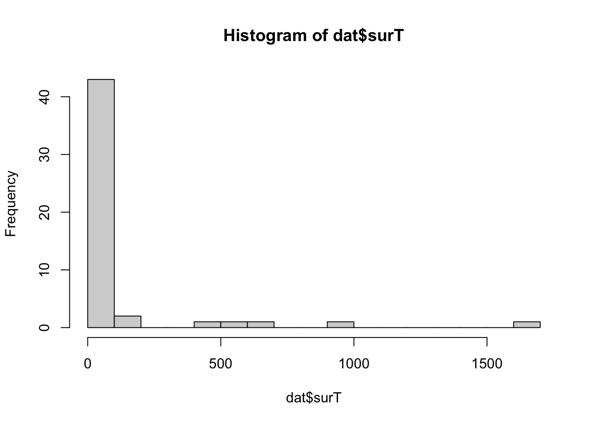
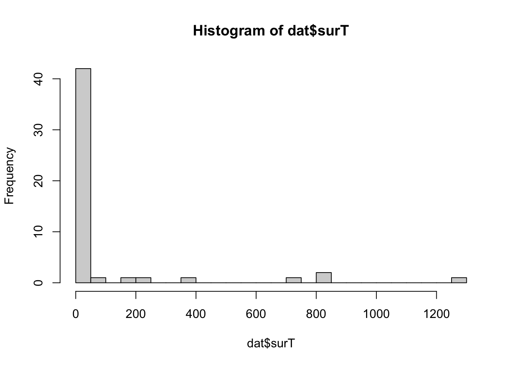

Run Susie on one predictor model
Yunqi Yang
2/9/2023
Last updated: 2023-02-09
Checks: 7 0
Knit directory: survival-susie/
This reproducible R Markdown analysis was created with workflowr (version 1.6.2). The Checks tab describes the reproducibility checks that were applied when the results were created. The Past versions tab lists the development history.
Great! Since the R Markdown file has been committed to the Git repository, you know the exact version of the code that produced these results.
Great job! The global environment was empty. Objects defined in the global environment can affect the analysis in your R Markdown file in unknown ways. For reproduciblity it’s best to always run the code in an empty environment.
The command set.seed(20230201) was run prior to running the code in the R Markdown file. Setting a seed ensures that any results that rely on randomness, e.g. subsampling or permutations, are reproducible.
Great job! Recording the operating system, R version, and package versions is critical for reproducibility.
Nice! There were no cached chunks for this analysis, so you can be confident that you successfully produced the results during this run.
Great job! Using relative paths to the files within your workflowr project makes it easier to run your code on other machines.
Great! You are using Git for version control. Tracking code development and connecting the code version to the results is critical for reproducibility.
The results in this page were generated with repository version 27cf8af. See the Past versions tab to see a history of the changes made to the R Markdown and HTML files.
Note that you need to be careful to ensure that all relevant files for the analysis have been committed to Git prior to generating the results (you can use wflow_publish or wflow_git_commit). workflowr only checks the R Markdown file, but you know if there are other scripts or data files that it depends on. Below is the status of the Git repository when the results were generated:
Ignored files:
Ignored: .DS_Store
Ignored: .Rhistory
Ignored: .Rproj.user/
Ignored: analysis/.DS_Store
Ignored: analysis/.RData
Ignored: analysis/.Rhistory
Note that any generated files, e.g. HTML, png, CSS, etc., are not included in this status report because it is ok for generated content to have uncommitted changes.
These are the previous versions of the repository in which changes were made to the R Markdown (analysis/one_predictor_investigation.Rmd) and HTML (docs/one_predictor_investigation.html) files. If you’ve configured a remote Git repository (see ?wflow_git_remote), click on the hyperlinks in the table below to view the files as they were in that past version.
| File | Version | Author | Date | Message |
|---|---|---|---|---|
| Rmd | 27cf8af | yunqiyang0215 | 2023-02-09 | wflow_publish("analysis/one_predictor_investigation.Rmd") |
| html | cd1637e | yunqiyang0215 | 2023-02-09 | Build site. |
| Rmd | 1cfdc17 | yunqiyang0215 | 2023-02-09 | wflow_publish("analysis/one_predictor_investigation.Rmd") |
Description:
Simulate time-to-event data based on exponential model. And fit proportional hazard model to data. Let’s first simulate data without censoring. The full explanation about simulation is at: https://yunqiyang0215.github.io/survival-susie/sim_survival.html
Here I try different correlations between \(x_1\) and \(x_2\) where \(x_1\) has an effect on survival time, and \(x_2\) doesn’t have. That is, the true model is: \(\log T_i = \beta_0+\beta_1x_{i1} +\epsilon_i\).
Results: (1) For r = 0.9, and r = 0.8. Susie seems work marginally. (2) For r = 0.7, Susie gives rediculous results. Seems something wrong in the code.
library(mvtnorm)
library(survival)
# Modified Karl's code for intercept part
devtools::load_all("/Users/nicholeyang/Desktop/logisticsusie")ℹ Loading logisticsusieSimulation functions:
# Here we use parametric model to simulate data with survival time,
# assuming survival time is exponentially distributed.
# We first simulate the mean of exponential from linear combinations
# of variables, and then simulate survival time.
# T\sim 1/u*exp(-t/u), and the true model is:
# log(T) = \mu + e = b0 + Xb + e
# @param b: vector of length (p+1) for true effect size, include intercept.
# @param X: variable matrix of size n by p.
# @param status: censoring status. 1 = censored, 2 = event observed.
sim_dat <- function(b, X){
n = nrow(X)
mu <- exp(cbind(rep(1,n), X) %*% b)
surT <- rexp(n, rate = 1/mu)
dat <- data.frame(cbind(surT, X))
names(dat) = c("surT", "x1", "x2")
dat$status <- rep(2, n)
return(dat)
}Functions for running IBSS
# Function to calculate approximate BF based on Wakefield approximation
# @param z: zscore of the regression coefficient
# @param s: standard deviation of the estimated coefficient
compute_abf <- function(z, s, prior_variance){
abf <- sqrt(s^2/(s^2+prior_variance))*exp(z^2/2*(prior_variance/(s^2+prior_variance)))
return(abf)
}
compute_approx_post_var <- function(z, s, prior_variance){
post_var <- 1/(1/s^2 + 1/prior_variance)
return(post_var)
}
# @param post_var: posterior variance
# @param s: standard deviation of the estimated coefficient
# @param bhat: estimated beta effect
compute_approx_post_mean <- function(post_var, s, bhat){
mu <- post_var/(s^2)*bhat
return(mu)
}surv_uni_fun <- function(x, y, o, prior_variance, estimate_intercept = 0, ...){
fit <- coxph(y~ x + o)
bhat <- summary(fit)$coefficients[1, 1]
sd <- summary(fit)$coefficients[1, 3]
zscore <- summary(fit)$coefficients[1, 4]
bf <- compute_abf(zscore, sd, prior_variance)
var <- compute_approx_post_var(zscore, sd, prior_variance)
mu <- compute_approx_post_mean(var, sd, bhat)
lbf <- log(bf)
return(list(mu = mu, var=var, lbf=lbf, intercept=0))
}
fit_coxph <- ser_from_univariate(surv_uni_fun)Sim1: r = 0.9.
set.seed(2)
r = 0.9
n <- 50
b <- c(1, 3, 0)
X <- rmvnorm(n, sigma = matrix(c(1, r, r, 1), ncol = 2, nrow = 2))
dat <- sim_dat(b, X)
hist(dat$surT, breaks = 20)
| Version | Author | Date |
|---|---|---|
| cd1637e | yunqiyang0215 | 2023-02-09 |
# Fit cox ph
## Create survival object. status == 2 is death
dat$y <- with(dat, Surv(surT, status == 2))
cox <- coxph(y ~ x1 + x2, data = dat)
summary(cox)Call:
coxph(formula = y ~ x1 + x2, data = dat)
n= 50, number of events= 50
coef exp(coef) se(coef) z Pr(>|z|)
x1 -2.55832 0.07743 0.44590 -5.737 9.61e-09 ***
x2 -0.43372 0.64809 0.32930 -1.317 0.188
---
Signif. codes: 0 '***' 0.001 '**' 0.01 '*' 0.05 '.' 0.1 ' ' 1
exp(coef) exp(-coef) lower .95 upper .95
x1 0.07743 12.914 0.03231 0.1856
x2 0.64809 1.543 0.33989 1.2358
Concordance= 0.902 (se = 0.021 )
Likelihood ratio test= 102.1 on 2 df, p=<2e-16
Wald test = 54.51 on 2 df, p=1e-12
Score (logrank) test = 73.13 on 2 df, p=<2e-16X = as.matrix(dat[, c(2:3)])
y = dat$y
fit <- ibss_from_ser(X, y, L = 10, prior_variance = 1., prior_weights = rep(1/2, 2), tol = 1e-3, maxit = 100, estimate_intercept = TRUE, ser_function = fit_coxph)10.261 sec elapsedfit$alpha [,1] [,2]
[1,] 0.06669668 0.9333033
[2,] 0.65530739 0.3446926
[3,] 0.65575846 0.3442415
[4,] 0.65615088 0.3438491
[5,] 0.65632170 0.3436783
[6,] 0.65619941 0.3438006
[7,] 0.65583822 0.3441618
[8,] 0.65539917 0.3446008
[9,] 0.65507624 0.3449238
[10,] 0.65500422 0.3449958Sim2: r = 0.8
set.seed(2)
r = 0.8
n <- 50
b <- c(1, 3, 0)
X <- rmvnorm(n, sigma = matrix(c(1, r, r, 1), ncol = 2, nrow = 2))
dat <- sim_dat(b, X)
hist(dat$surT, breaks = 20)
| Version | Author | Date |
|---|---|---|
| cd1637e | yunqiyang0215 | 2023-02-09 |
# Fit cox ph
## Create survival object. status == 2 is death
dat$y <- with(dat, Surv(surT, status == 2))
cox <- coxph(y ~ x1 + x2, data = dat)
summary(cox)Call:
coxph(formula = y ~ x1 + x2, data = dat)
n= 50, number of events= 50
coef exp(coef) se(coef) z Pr(>|z|)
x1 -2.70130 0.06712 0.40618 -6.651 2.92e-11 ***
x2 -0.37518 0.68717 0.23165 -1.620 0.105
---
Signif. codes: 0 '***' 0.001 '**' 0.01 '*' 0.05 '.' 0.1 ' ' 1
exp(coef) exp(-coef) lower .95 upper .95
x1 0.06712 14.899 0.03028 0.1488
x2 0.68717 1.455 0.43639 1.0821
Concordance= 0.898 (se = 0.023 )
Likelihood ratio test= 101.5 on 2 df, p=<2e-16
Wald test = 53.8 on 2 df, p=2e-12
Score (logrank) test = 73.14 on 2 df, p=<2e-16X = as.matrix(dat[, c(2:3)])
y = dat$y
fit <- ibss_from_ser(X, y, L = 10, prior_variance = 1., prior_weights = rep(1/2, 2), tol = 1e-3, maxit = 100, estimate_intercept = TRUE, ser_function = fit_coxph)8.605 sec elapsedfit$alpha [,1] [,2]
[1,] 0.05557329 0.9444267
[2,] 0.73050163 0.2694984
[3,] 0.73079335 0.2692067
[4,] 0.73119270 0.2688073
[5,] 0.73153210 0.2684679
[6,] 0.73167064 0.2683294
[7,] 0.73154912 0.2684509
[8,] 0.73121998 0.2687800
[9,] 0.73083015 0.2691698
[10,] 0.73055282 0.2694472Sim3: r = 0.7
set.seed(2)
r = 0.7
n <- 50
b <- c(1, 3, 0)
X <- rmvnorm(n, sigma = matrix(c(1, r, r, 1), ncol = 2, nrow = 2))
dat <- sim_dat(b, X)
hist(dat$surT, breaks = 20)
| Version | Author | Date |
|---|---|---|
| cd1637e | yunqiyang0215 | 2023-02-09 |
# Fit cox ph
## Create survival object. status == 2 is death
dat$y <- with(dat, Surv(surT, status == 2))
cox <- coxph(y ~ x1 + x2, data = dat)
summary(cox)Call:
coxph(formula = y ~ x1 + x2, data = dat)
n= 50, number of events= 50
coef exp(coef) se(coef) z Pr(>|z|)
x1 -2.63840 0.07148 0.37615 -7.014 2.31e-12 ***
x2 -0.37759 0.68551 0.20131 -1.876 0.0607 .
---
Signif. codes: 0 '***' 0.001 '**' 0.01 '*' 0.05 '.' 0.1 ' ' 1
exp(coef) exp(-coef) lower .95 upper .95
x1 0.07148 13.991 0.0342 0.1494
x2 0.68551 1.459 0.4620 1.0171
Concordance= 0.888 (se = 0.021 )
Likelihood ratio test= 99.48 on 2 df, p=<2e-16
Wald test = 54.83 on 2 df, p=1e-12
Score (logrank) test = 73.46 on 2 df, p=<2e-16X = as.matrix(dat[, c(2:3)])
y = dat$y
fit <- ibss_from_ser(X, y, L = 10, prior_variance = 1., prior_weights = rep(1/2, 2), tol = 1e-3, maxit = 100, estimate_intercept = TRUE, ser_function = fit_coxph)0.233 sec elapsedfit$alpha [,1] [,2]
[1,] 1 3.208481e-11
[2,] 1 3.208481e-11
[3,] 1 3.208481e-11
[4,] 1 3.208481e-11
[5,] 1 3.208481e-11
[6,] 1 3.208481e-11
[7,] 1 3.208481e-11
[8,] 1 3.208481e-11
[9,] 1 3.208481e-11
[10,] 1 3.208481e-11
sessionInfo()R version 4.1.1 (2021-08-10)
Platform: x86_64-apple-darwin20.6.0 (64-bit)
Running under: macOS Monterey 12.0.1
Matrix products: default
BLAS: /usr/local/Cellar/openblas/0.3.18/lib/libopenblasp-r0.3.18.dylib
LAPACK: /usr/local/Cellar/r/4.1.1_1/lib/R/lib/libRlapack.dylib
locale:
[1] en_US.UTF-8/en_US.UTF-8/en_US.UTF-8/C/en_US.UTF-8/en_US.UTF-8
attached base packages:
[1] stats graphics grDevices utils datasets methods base
other attached packages:
[1] logisticsusie_0.0.0.9004 testthat_3.1.0 survival_3.2-11
[4] mvtnorm_1.1-3 workflowr_1.6.2
loaded via a namespace (and not attached):
[1] tidyselect_1.1.1 xfun_0.27 bslib_0.4.1 remotes_2.4.1
[5] purrr_0.3.4 splines_4.1.1 lattice_0.20-44 generics_0.1.2
[9] vctrs_0.3.8 usethis_2.1.3 htmltools_0.5.2 yaml_2.2.1
[13] utf8_1.2.2 rlang_1.0.6 pkgbuild_1.2.0 jquerylib_0.1.4
[17] later_1.3.0 pillar_1.6.4 glue_1.4.2 withr_2.5.0
[21] sessioninfo_1.1.1 matrixStats_0.63.0 lifecycle_1.0.1 stringr_1.4.0
[25] tictoc_1.1 devtools_2.4.2 evaluate_0.14 memoise_2.0.1
[29] knitr_1.36 callr_3.7.0 fastmap_1.1.0 httpuv_1.6.3
[33] ps_1.6.0 fansi_0.5.0 highr_0.9 Rcpp_1.0.8.3
[37] promises_1.2.0.1 cachem_1.0.6 desc_1.4.0 pkgload_1.2.3
[41] jsonlite_1.7.2 fs_1.5.0 digest_0.6.28 stringi_1.7.5
[45] dplyr_1.0.7 processx_3.5.2 rprojroot_2.0.2 grid_4.1.1
[49] cli_3.1.0 tools_4.1.1 magrittr_2.0.1 sass_0.4.4
[53] tibble_3.1.5 crayon_1.4.1 whisker_0.4 pkgconfig_2.0.3
[57] ellipsis_0.3.2 Matrix_1.5-3 prettyunits_1.1.1 rmarkdown_2.11
[61] rstudioapi_0.13 R6_2.5.1 git2r_0.28.0 compiler_4.1.1